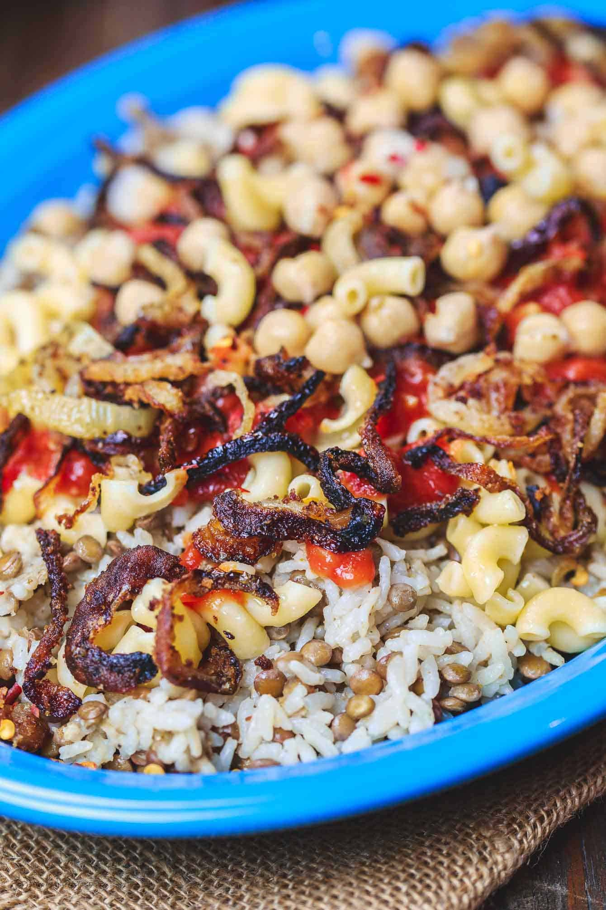

üç≤ Koshari

DESCRIPTION
Koshari is a traditional Egyptian staple, mixing chick peas, pasta, fried onions, and zesty tomato sauce, served on top a bed of rice and brown lentils! Flavor packed and not to mention healthy!
INGREDIENTS
- 1 large onion, sliced into thin rings
- Cooking oil
- 1 small onion, grated
- 1 ½ cup brown lentils, picked over and well-rinsed
- 1 ½ cup medium-grain rice, rinsed, soaked in water for 15 minutes, drained
- ½ tsp each salt and pepper
- ½ tsp coriander
- 2 cups elbow pasta
INSTRUCTIONS
-
Cook the lentils. Bring lentils and 4 cups of water to a boil in a medium pot or saucepan over high heat. Reduce the heat to low and cook until lentils are just tender (15-17 minutes). Drain from water and season with a little salt. (Note: when the lentils are ready, they should not be fully cooked. They should be only par-cooked and still have a bite to them as they need to finish cooking with the rice).
-
Now, for the rice. Drain the rice from its soaking water. Combine the par-cooked lentils and the rice in the saucepan over medium-high heat with 1 tablespoon cooking oil, salt, pepper, and coriander. Cook for 3 minutes, stirring regularly. Add warm water to cover the rice and lentil mixture by about 1 ½ inches (you'll probably use about 3 cups of water here). Bring to a boil; the water should reduce a bit. Now cover and cook until all the liquid has been absorbed and both the rice and lentils are well cooked through (about 20 minutes). Keep covered and undisturbed for 5 minutes or so.
-
Now make the pasta. While the rice and lentils are cooking, make the pasta according to package instructions by adding the elbow pasta to boiling water with a dash of salt and a little oil. Cook until the pasta is al dente. Drain.
home page